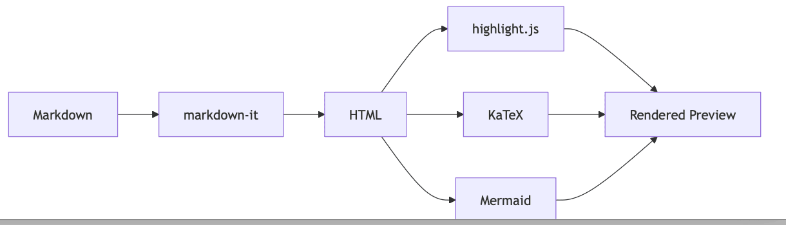
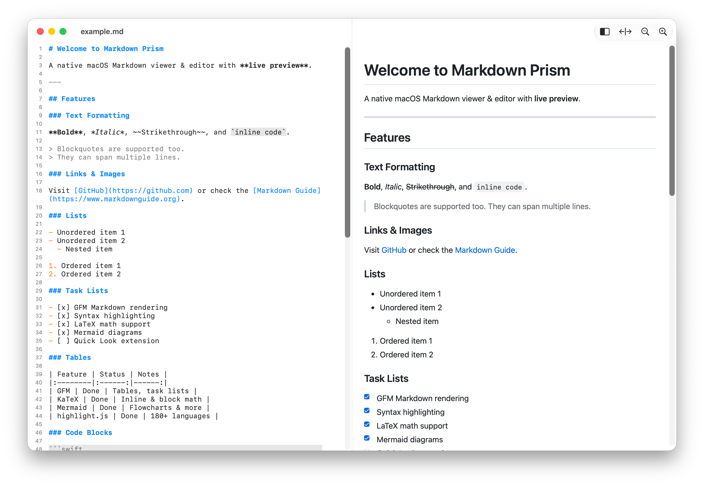
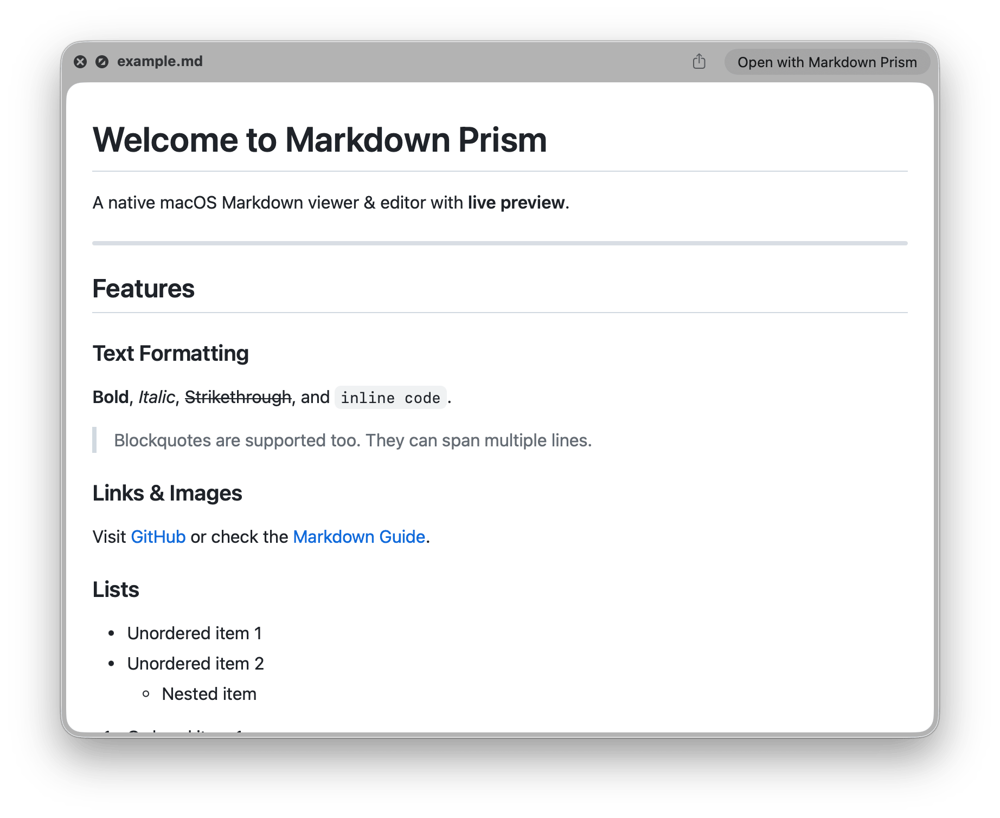

제목없음.md
# 마크다운을 씁니다. ## 바로 렌더링됩니다. macOS 네이티브 에디터입니다. 왼쪽에 쓴 글이 오른쪽에 완성된 문서로, 타이핑하는 그대로 나타납니다.
마크다운을 씁니다.
바로 렌더링됩니다.
macOS 네이티브 에디터입니다. 왼쪽에 쓴 글이 오른쪽에 완성된 문서로, 타이핑하는 그대로 나타납니다.
$
또는 .dmg 내려받기
brew install --cask hulryung/tap/markdown-prism
무엇을 렌더링하나
아래는 모두 GitHub Flavored Markdown이고, 여기에 기술 문서를 쓰다 보면 결국 필요해지는 두 가지가 더해집니다.
math.md
인라인 $E = mc^2$ 그리고 블록: $$ \sum_{n=1}^{\infty} \frac{1}{n^2} = \frac{\pi^2}{6} $$
인라인 E = mc2 그리고 블록:
∑n=1∞ 1/n2 = π2/6
status.md
| 기능 | 상태 | |---------|------| | GFM | 완료 | | KaTeX | 완료 | - [x] 에디터 출시 - [ ] 문서 작성
| 기능 | 상태 |
|---|---|
| GFM | 완료 |
| KaTeX | 완료 |
- 에디터 출시
- 문서 작성
pipeline.md
```mermaid graph LR A[Markdown] --> B[markdown-it] B --> C[HTML] ```

브라우저 탭이 아니라 맥 앱답게
프로젝트가 아니라 문서를 엽니다. 이미 익숙한 방식이 그대로 통합니다.
- 탭과 창
- 문서 하나에 창 하나. 원하면 네이티브 탭으로 합칠 수 있습니다.
- 훑어보기
- Finder에서
.md파일을 고르고 스페이스바를 누르면 렌더링된 상태로 보입니다. - 스크롤 동기화
- 에디터와 미리보기가 양방향으로 서로를 따라갑니다.
- 외부 변경 반영
- 다른 곳에서 파일을 고치면 열려 있는 문서가 따라옵니다.
- 찾기 및 바꾸기
- 소스와 미리보기를 함께, 정규식으로 찾습니다.
- 기기 밖으로 나가지 않음
- 파서·구문 강조·수식·다이어그램이 모두 앱 안에 들어 있습니다.


설치
Homebrew로 설치하면 업데이트까지 따라옵니다. 디스크 이미지는 서명·공증되어 있어 설정에서 따로 허용할 필요가 없습니다.
$
릴리스에서 .dmg 내려받기
brew install --cask hulryung/tap/markdown-prism